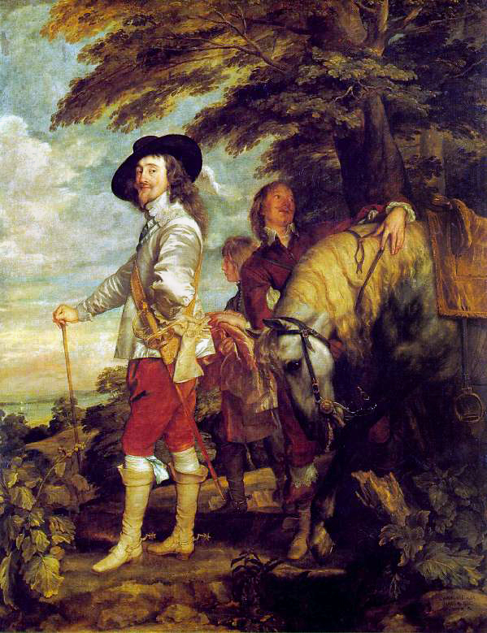

The Musée du Louvre marks a European first with a major exhibition on the Mamluk sultanate (1250–1517), aiming to address this golden age of the Islamic Near East in all its scope and richness by examining it from a transregional perspective.
The Mamluks, freed slave-soldiers of primarily Turkish (and later Caucasian) origin, built their legend on their warrior prowess. From 1250 to 1517, the Mamluk sultanate conquered the last bastions of the Crusaders, fought and repulsed the Mongol threat, survived Timur’s invasions and kept its threatening Turkmen and Ottoman neighbours at bay before succumbing to the latter’s expansionism. It encompassed a vast territory including Egypt, Bilad al-Sham (Syria, Libya, Israel/Palestine, Jordan), part of eastern Anatolia and the Hejaz region of Arabia, which includes Mecca and Medina.
The exhibition, through a spectacular scenography, immersive spaces and varied layouts, invites visitors into a living experience of the world of the Mamluks. Visitors will also be introduced to historical figures representative of Mamluk society, telling their unique stories as part of the greater history.

The painting has been traditionally considered to depict the Italian noblewoman Lisa del Giocondo.It is painted in oil on a white poplar panel.Leonardo never gave the painting to the Giocondo family.It was believed to have been painted between 1503 and 1506;
The painting's global fame and popularity partly stem from its 1911 theft by Vincenzo Peruggia, who attributed his actions to Italian patriotism—a belief it should belong to Italy. The theft and subsequent recovery in 1914 generated unprecedented publicity for an art theft
The Mona Lisa is one of the most valuable paintings in the world. It holds the Guinness World Record for the highest known painting insurance valuation in history at US$100 million in 1962,equivalent to $1 billion as of 2023.

This is Van Dyck’s most famous portrait, and arguably the best-known portrait of a king of England. Yet paradoxically, there’s some mystery surrounding the piece: we know it entered the French royal collections in 1775, during the reign of Louis XVI, but we don’t know how or when it came to be in France. Through the process of deduction, we’ve been able to trace it back to the exiled court of King James II of England, around 1700. But beyond that, we can only speculate about the period between the portrait’s creation in the late 1630s and the early 18th century. It’s fascinating that such a large-scale painting (271 x 211 cm) could have disappeared and made its way to France unnoticed.
That's the million-dollar question! Overall, the piece is incredibly rich, which is all the more astonishing given that the artist made only one preparatory drawing. Van Dyck painted the king’s face all in one go, and yet, there’s an exceptional mastery and lightness to the rendering. But what’s arguably most remarkable is that a sort of knowing indecision surrounds the subject.